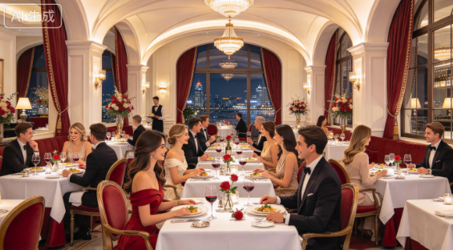

闌珊公司相信，最自然的緣分往往在輕鬆飯局中發生。我們的「相親對象集體午餐／晚餐」服務，專為單身男女打造舒適、無壓力的認識平台。我們會根據年齡、興趣、職業及擇偶條件，將合適的參加者安排在同一桌，並由專業主持人帶領破冰遊戲與交流話題，讓你在品嚐美食之餘，輕鬆認識新朋友。活動地點經過精心挑選，氣氛溫馨，私隱度高；每場人數適中，確保每位參加者都有充分交流機會。無論是悠閒午餐，還是浪漫晚餐，你都可以在自然互動中展現真我，尋覓心動對象。闌珊公司更會於活動後跟進配對意願，助你把握良緣。告別尷尬相親，由一頓飯開始，讓幸福悄悄靠近。